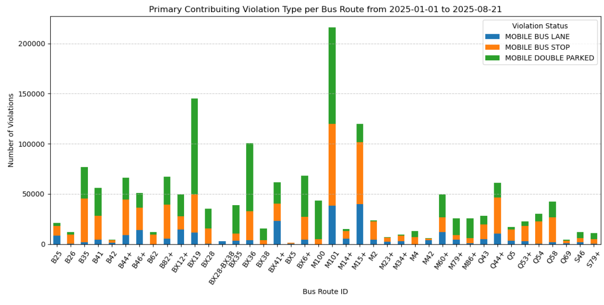
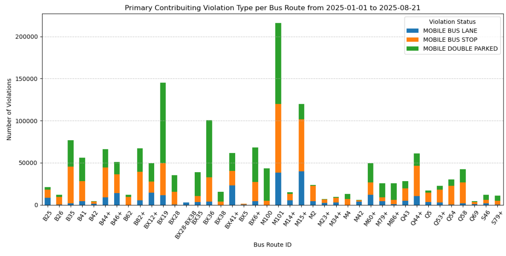

Lost in Transit
MTA MHC++ Datathon
ACE's expansion is both a success and a warning.
Introduction
What is the ACE System?
Automated Camera Enforcement equips MTA buses with cameras that detect and issue violations to vehicles that drive, park, or loiter in bus lanes, double park along bus routes, and block bus stops. ACE is intended to speed up buses, keep the streets safer, and to improve accessibility and reliability.

Growth of ACE
2023: ACE was active on a small set of routes, issued 290 thousand violations.
2024: ACE expanded throughout the boroughs, issued 1.46 million violations.
2025: ACE scaled further, issued 1.67 million violations.
*2025 information is up to August


As the ACE program expands, it is catching more violations than ever—evidence that enforcement is working. However, how accurate is the number of violations being reported? Are there technical issues in enforcement? What are the consequences of misrepresenting violations?
Discrepancies in the System
From 2023 to 2025, there were sections of violation statuses that changed.
Violation Issued: Dropped 11%. This means a smaller number of violations are being flagged as acutal, enforced violations. A larger amount of violations are being processed into categories such as "Technical Issue/Other" and "Driver/Vehicle Info Missing" rather than more concrete and readable categories like "Exempt - Bus/Paratransit" and "Exempt - Emergency Vehicle".
Technical Issue/Other: Grew from 17,553 to 145,232 violations, meaning there are issues with the infastructure, which could be camera malfunctions, processing errors, unresolved cases, misclassifications, and other unknown issues.
Driver/Vehicle Info Missing: Grew from 20,601 to 143,238 violations, which shows a lot of violations would have been successfully processed if there were no issues with the management of buses and drivers.
Exempt - Other: Grew from 9,814 to 66,990 violations, which is not very specific and can be used for any purpose, such as covering up inconsistences and unresolved issues.
In 2025, out of 1,667,658 violations, 145,232+ represented had missing information, having the MTA potentially lose out on a minimum of $4,153,635 in uncollected fines as fines start at $50 and can escalate up to a maximum of $250 per violation.
Profit Losses
Exempt Violations with missing information make up a large portion of the total. This means the MTA is losing out on potential profit from collection of fines. Per violation, fines start at $50 and can escalate up to $250.


2023: 290,621 violations, 47,988 represented had missing information, having the MTA lose out on a minimum of $877,650 in uncollected fines. 16.5% exempt violations, with emergency vehicle and bus/paratransit vehicles being the top two most repeat offenders.
2024: 1,464,865 violations, 102,188 represented had missing information, having the MTA lose out on a minimum of $3,392,600 in uncollected fines. 25.5% exmept violations, with commercial under 20 and emergency vehicles being the top two most repeat offenders
2025: out of 1,667,658 violations, 145,232+ represented had missing information, having the MTA lose out on a minimum of $4,153,635 in uncollected fines. 25.5% of all violations were exempt, with commercial under 20 and emergency vehicles being the top two most repeat offenders
Reasons for Delays
 

Violations are not evenly distributed and cluster at multi-route stops that include transfer hubs and overlapping bus routes. These violations are especially prominent within the Bronx and Manhattan, and are overwhelming concentrated in double parking.
Transfer Hubs & Overlapping Routes: The stops which receive the most violations often serve multiple bus routes. These locations experience higher traffic density and have longer boarding times. Stops like Broadway/Isham St contain BX12+, M100, and BX28.
High Density: The Bronx and Manhattan have the highest amount of violations in comparison to Brooklyn, Queens, and Staten Island, which have significantly less people. These two boroughs, who are most reliant on bus service, recieve the most violations.
Double Parking: In 2025, 43.7% of violations consisted of double parking in bus lanes. This directly reflects a major issue as the amount of vehicles is vastly larger than the number of avaliable parking spots. Businesses may have insufficient loading zones and there is always competition and pressure on where to park.
The Path Forward
The MTA is losing out on a lot of money which could be used on the development and maintenance of infastructure, and improvements to bus lanes, accessibility, and service. There are a number of ways for buses to accurately record violations.
Saving Resources: Vehicles that are exempt like ambulances and police cars can be ignored to reduce manpower and costs of using the camera.
Expanded Categorization of Exempt Vehicles: Instead of moving unclear cases into "other" or "missing" categories, create subcategories such as "Plate Obstructed" or "Camera Malfunction" to future diagnose issues.
Improve Capture Ability & Combat Technical Issues: Use AI-assisted plate recognition and cross references with DMV databases to fill gaps where driver/vehicle information is incomplete.
Overall, the MTA ACE program is doing a decent job at catching violations, however this still a portion of the program experiencing technical issues which could be an additonal $4-10 million dollars, which could be used on the development and maintenance of infastructure, and improvements to bus lanes, accessibility, and service. There are a number of ways for buses to accurately record violations.
Additional Conclusions
(1) Which MTA bus routes are highly utilized by CUNY students? For routes that are automated camera-enforced, how have bus speeds changed over time? There are multiple MTA Bus routes that are highly utilized by CUNY students. As a Baruch student, there is the M101 or M102, M, M2, M3, M5, M15 & M32. Of which, the M101 is included in the ACE Program Over time, speeds have increased, matching MTA claims of an overall 5% faster commute times as a majority of the routes
(2) Some vehicles stopped in violation are exempt from fines due to business reasons. For vehicles that are exempt, are there repeat offenders? Where are exempt vehicles frequently in violation? In the case of an exemption there are often repeat offenders that were issued violations upward to 1000+ times, Of the repeat offenders it is primarily from emergency vehicles and commercial vehicles.
(3) Some automated camera-enforced routes travel within or across Manhattan’s Central Business District. How have violations on these routes changed alongside the implementation of congestion pricing? Since the implementation of congestion pricing in 2025, we’ve seen an increase in violations which has nearly met the total previously issued violations from 2024, however we’ve also seen an uptick in exempt violations which requires further investigation.